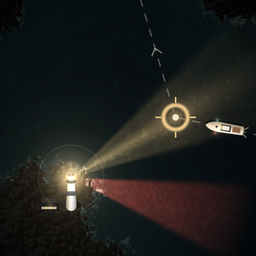
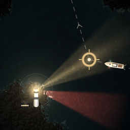

Sector LightTurn the light. Bring them through.
A quiet puzzle of beams and bearings, for iPhone and iPad.
Small vessels cross a dark chart. Every gate on their route must be lit when they reach it. You set the lights: turn each beam, choose its rhythm, shift its phase. Then launch, and watch the plan run.

Fifteen charts, five ideas
- I · Stillwater. Turn one light onto its gates.
- II · The Narrows. Two and three lights. Land casts shadows.
- III · Red Sound. Red sectors turn with their lights and wreck any vessel they touch.
- IV · Fog Bell Point. Flashing lights open gates only while lit; choose the rhythm.
- V · Outer Shoals. Shift each light's phase to time the crossings.
Every chart is deterministic and proven solvable. Your score counts adjustments and simulated passage time, so the same plan scores the same on every device. A Game Center leaderboard for every chart, and one for the total.
Charts 1 to 3 are free. One purchase unlocks the other twelve. No subscription, no ads.